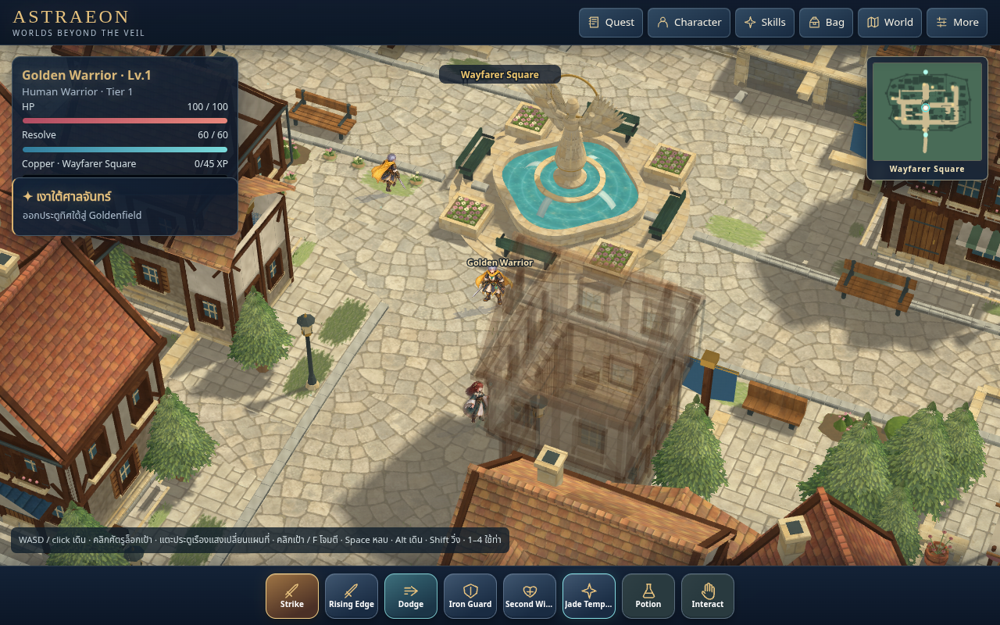
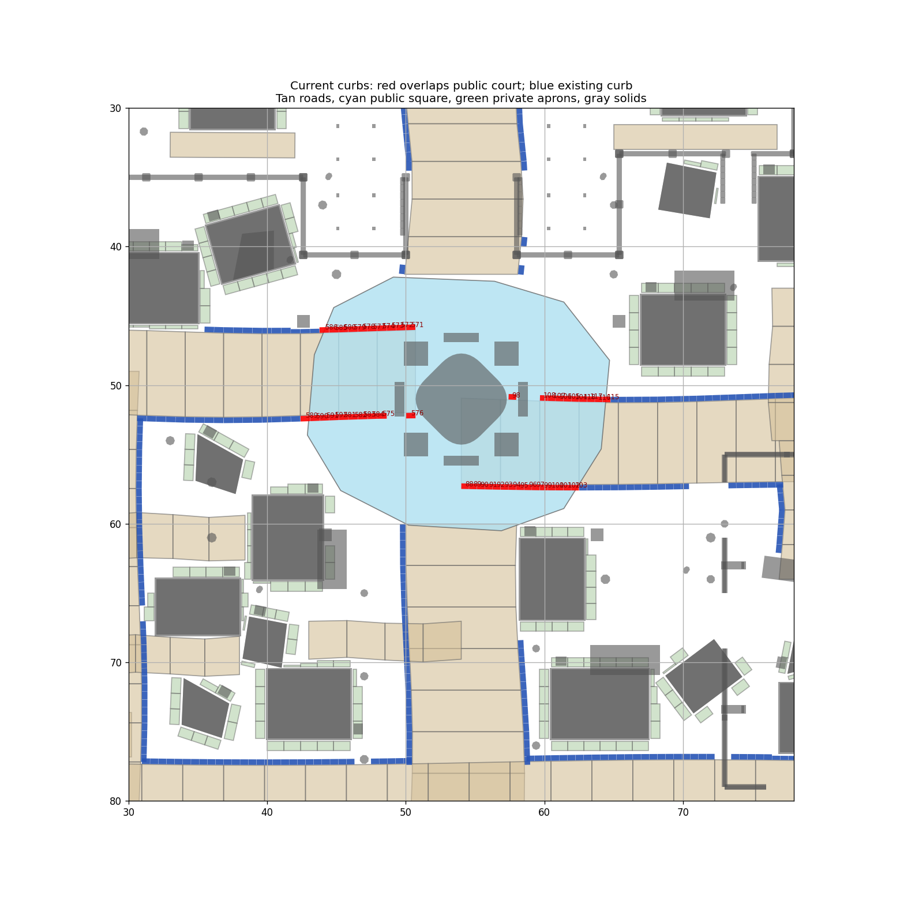
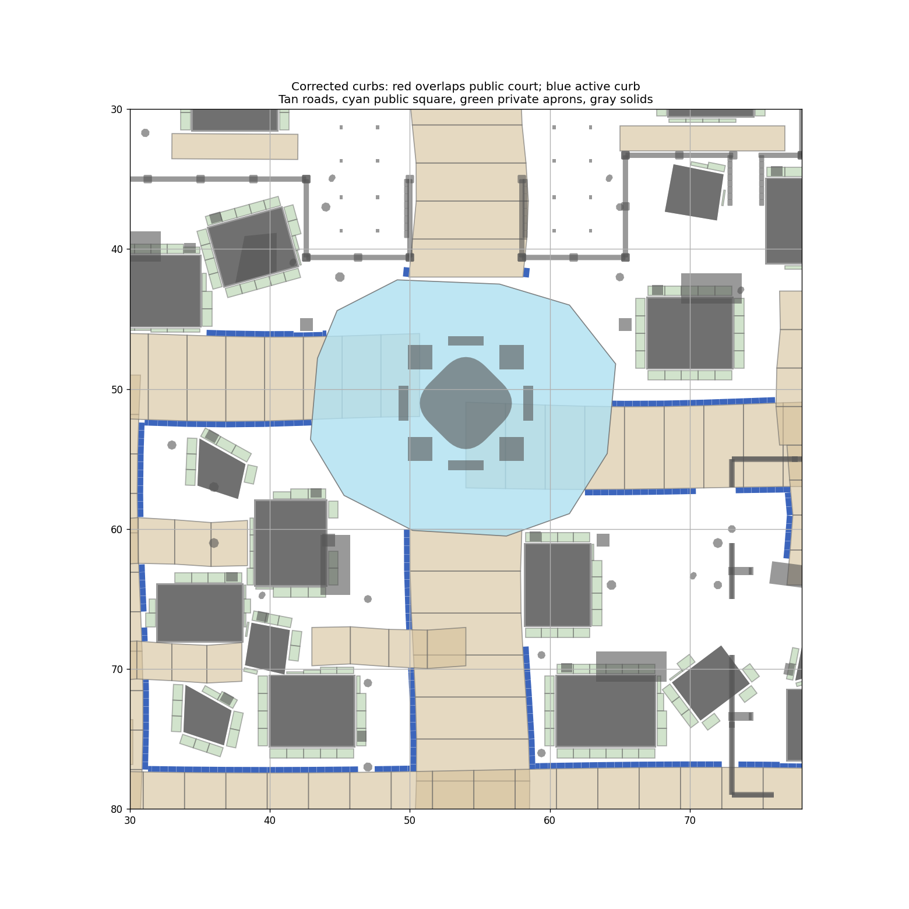

Source71 / cache78. The correction removes plaza-crossing courses, clips intersection ends and keeps the raised curb on the building side of the public walk path.
Review notes · Independent boundary checks · Visual decisions · Verification summary

Matched camera: distance160, yaw25°, pitch46°. Native1× world buffer1280×666. Actor positions and poses can differ.

